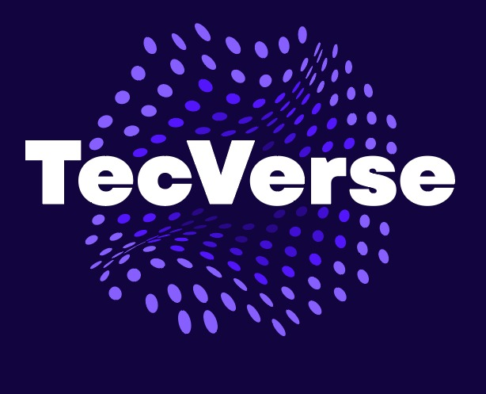
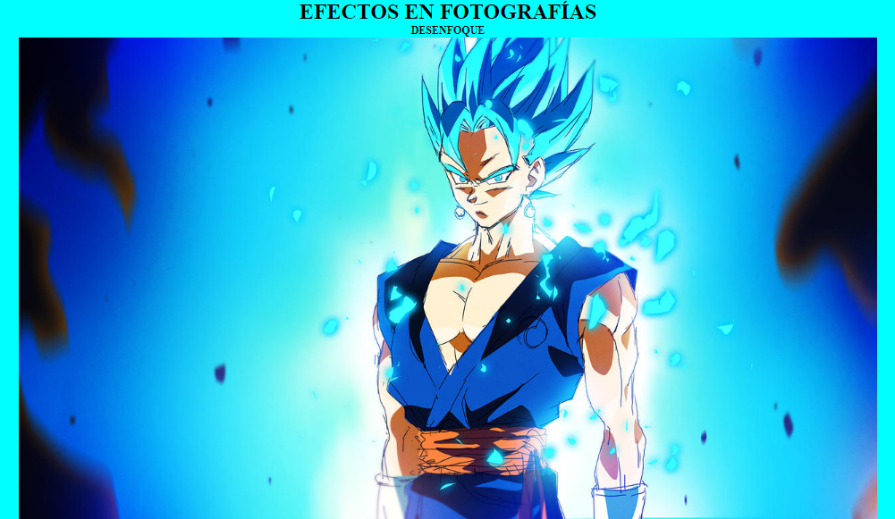
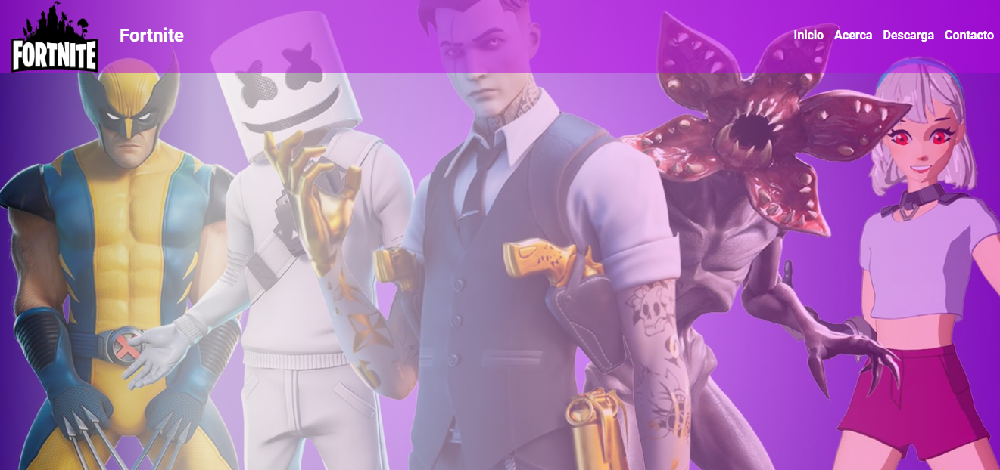
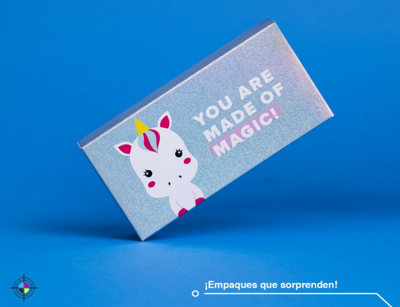
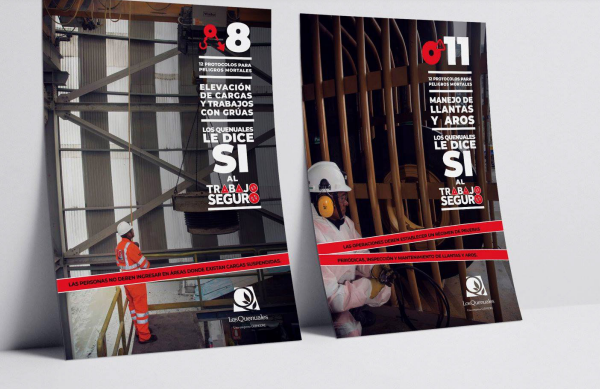
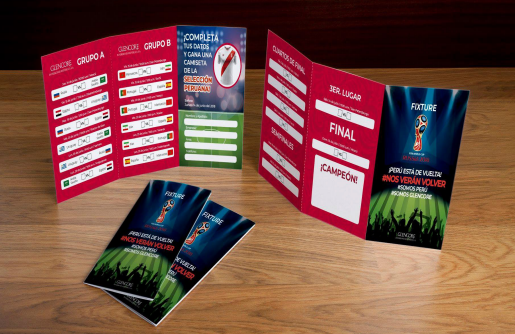

Nuestro Portafolio
destacamos en diseño web, diseño gráfico y venta de laptops. En diseño web, creamos sitios atractivos y funcionales que se adaptan a las necesidades de nuestros clientes. Nuestro enfoque en diseño gráfico se centra en transmitir mensajes impactantes a través de elementos visuales creativos. Además, ofrecemos una selección de laptops de alta calidad para satisfacer las necesidades tecnológicas de nuestros clientes. Valoramos la satisfacción del cliente y nos esforzamos por superar expectativas en cada proyecto. Explora nuestro portafolio para ver ejemplos de nuestro trabajo y descubre cómo podemos ayudarte a alcanzar tus objetivos digitales y tecnológicos.
-TecVerse
Desarrollo Web



Diseño Gráfico


